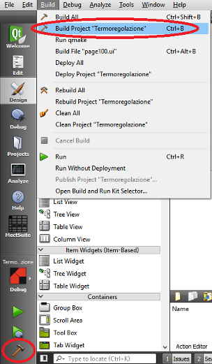

La compilation d'un projet peut se faire de deux façons distinctes et complètement équivalentes.
Il est possible de compiler en utilisant le bouton
 dans le panneau de gauche relatif aux outils qui peuvent
être utilisés pour le projet. Alternativement, dans le menu BUILD, sélectionnez l'option
“Build Project PPP.pro” où PPP est le projet que vous réalisez.
Les deux possibilités sont mises en évidence
dans la figure suivante.
dans le panneau de gauche relatif aux outils qui peuvent
être utilisés pour le projet. Alternativement, dans le menu BUILD, sélectionnez l'option
“Build Project PPP.pro” où PPP est le projet que vous réalisez.
Les deux possibilités sont mises en évidence
dans la figure suivante.
